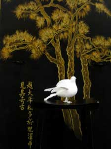

SpearheadNews.com
Super News
2007

Casting News
Events
Rehearsal Schedules
Interviews
Photos
Reviews
More Fun Stuff!
The
Super Handbook
San
Francisco Opera
Links
Classifieds
Contacts
Archives
Members Only
Spearheadnews.com is not officially affiliated with any
performing arts organization.
All photographs remain the property of their copyright holders.
©2007
SpearheadNews
All Rights Reserved
OPERA AT THE SYMPHONY
The 2005 Opera season was extended just a bit at Davies
Symphony Hall, when Igor Stavinsky’s Le Rossignol was
performed for the first time in San Francisco, on December 8, 9, and
10.
Supers may remember a call to volunteer to learn the staging of the
principals, so that the performance could be videotaped in advance of
their arrival.
Among those who volunteered were Michael Strickland, Kimberly
Thompson,
Phillipe Arbeit, Harold Hardin, John
Guglielmelli, and Charlie Lichtman. Fortunately
for the last two, they were offered parts as two of the four ‘musclemen’ in
the actual production. Listed on the cast page of the program as ‘Actors’,
their parts consisted of moving four screens around the stage not only
for scene changes, but also to facilitate the entrances and exits of the
performers. Three of the four also carried contortionists to the stage
for their rendition of a mechanical nightingale.
Le Rossignol, adapted from the Hans Christian Anderson story,
was written in 1914. It features singers, dancers, chorus, and a large
orchestra
in the 3-act, 45-minute performance. It was also ‘old home week’,
as many of you will recognize tenor Paul Groves (Cosi
Fan Tutti) as the
Fisherman, our favorite Catherine
Cook as the Imperial Cook and Death, Tigran and Ayk
Martirossian (both
appeared in Arshak II) as the Emperor/Bonze and the Chamberlain,
respectively),
Saundra DeAthos (who made her SF Opera debut in the recent Ariadne
Auf Naxos) and former SF Opera chorister Darla Wigginton as
Courtesans, Harold
Meers (the Novice in Billy Budd) Brian Frutiger (the
tenor who recently performed at our Super Party), and Eugene Brancoveanu (of
Adler fame - recently in Fidelio) as the three Japanese Envoys/Courtiers.
Running the show was SFO’s Stage Manager extraordinaire Lisa
Anderson,
ably assisted by Kim Pross. Kim also stage-managed Oedipus
Rex,
the other featured Stravinsky piece on the program.
A great time was had by all, and we hope that SF Symphony will continue
these semi-staged productions.
Le Rossignol Gallery